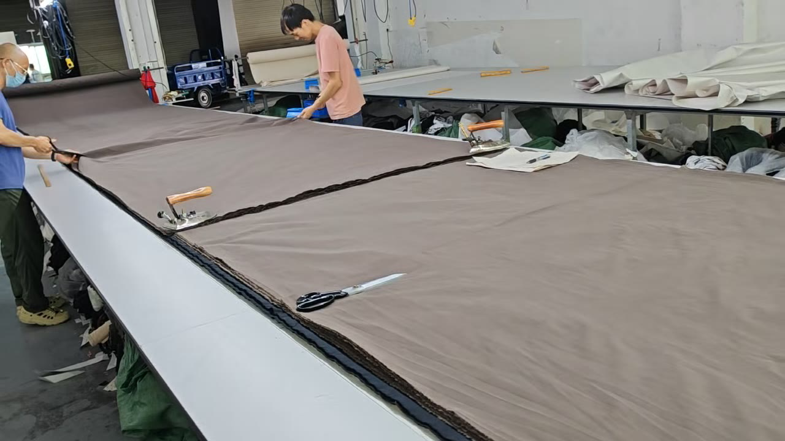

A new trouser shape can look convincing at a fitting and still be difficult to buy in depth. Which colour will customers choose? Will the relaxed fit work across the size range? Will a wholesale buyer want the same fabric next season? For an independent fashion label, those questions have a direct effect on how much cash to commit to a first order.
Small-batch clothing production offers a way to test the answers. It can suit a European womenswear brand developing a capsule collection, adding a new category or ordering beyond its established bestsellers. A smaller run leaves room to learn, provided the fabric, costing and delivery plan support it.
Small-batch production is not a shortcut around product quality. It works best when sampling, fabric sourcing, pattern development, fit review and bulk quality control are treated as one connected process.
When a Smaller First Order Makes Sense
Independent brands face a different set of pressures from large retailers. They may have a smaller customer base, a shorter cash cycle and a collection built around a distinctive point of view rather than a large number of interchangeable products.
A brand may want to test:
- a new silhouette or proportion;
- a new fabric, colour or finishing treatment;
- a new category such as knitwear, tailoring or outerwear;
- a small capsule collection for a new season; or
- a product before offering it to wholesale buyers.
Committing too much stock before those questions are answered ties up capital and makes a young label less responsive. A smaller first run gives the brand a way to validate the product while keeping room for changes.
Small Batches Give Product Teams Better Information
The value of a small production run is not only the lower quantity. It is the information that comes back from the market. Customers reveal which fit they prefer, which colour sells first, whether the fabric performs as expected and which details need refinement.
That information can be used in a second run. A sleeve may be adjusted, a waistband rebalanced, a lining changed or a colour added with more confidence. This is especially useful for contemporary womenswear, where a small change in drape or proportion can change the entire feeling of a garment.
Review sales by size and colour alongside returns and fit comments. A style that sells quickly in one size is not necessarily ready for a larger order across every size. Equally, poor sales may reflect photography, price or launch timing rather than a fault in the garment. Use the results to decide what to repeat and what needs another sample.
Fabric Is Part of the Design
For design-led womenswear, fabric is not a final purchasing detail. It is part of the product concept. The same pattern can produce a very different garment when the weight, drape, texture, stretch or finishing changes.
Linen can bring a dry, natural hand feel. Cotton can provide structure and everyday comfort. Viscose can create movement. Jersey can change the fit through stretch and recovery. Recycled or certified materials may support a brand's responsible sourcing direction, but they still need to work technically for the chosen silhouette.
Fabric sourcing should therefore happen early. A reliable clothing manufacturer can help compare options, check availability, assess shrinkage and discuss how a material will behave in cutting, sewing, washing and pressing. That reduces the risk of developing a sample in a fabric that cannot be repeated for production.
If a collection will be marketed as organic or recycled, agree which supporting documents are needed for the specific material and order. A smaller production run does not, by itself, establish a garment's environmental credentials.
Check the Fabric Minimum, Not Just the Garment MOQ
A factory may be able to sew a small order while the mill still requires a larger purchase for a custom colour. Ask whether the minimum order quantity applies per style, per colour or across the whole order. Then ask how many metres of fabric must be bought and who pays for unused material.
For example, a proposed run of 180 garments split between two colours and five sizes leaves an average of 18 pieces per colour and size. That is an illustration, not a Cyncho minimum. It shows why adding colours quickly changes the economics of a small batch, even when the total order seems reasonable.
Stock fabrics or a shared fabric across several styles can make a first collection easier to plan. The trade-off is availability: a stock colour may be gone by the time you reorder. Confirm the mill reference, colour reference and replenishment options before approving it. Our fabric and trim sourcing service is a useful starting point for that discussion.
From Sketch to Production-Ready Garment
A sketch can communicate the mood of a collection, but it cannot answer every production question. During sampling, the factory and brand need to work through fit, construction, measurements, seam allowances, trims, finishing and the way the garment moves on the body.
A useful development sequence is:
- Design: define the purpose, customer, silhouette and target price.
- Fabric: select a material that supports the silhouette and can be sourced consistently.
- Pattern: translate the idea into a workable pattern and size range.
- Sample: make a first version for fit and construction review.
- Revision: record clear comments and confirm the updated measurements.
- Production: approve the final sample before cutting and bulk manufacturing.
Keep fit comments in one dated document, with photographs and revised measurements. Agree the final fabric, trims, construction and size specifications in writing before production. A sample made in substitute fabric may help answer an early shape question, but it cannot confirm the final garment's drape or shrinkage.
Budget for Development and Delivery as Well as Sewing
A lower total order value can come with a higher price per garment. Pattern work, sample revisions, machine setup and cutting preparation still need to be paid for. Compare quotes on the same basis, including fabric, trims, labels, packaging, testing where required and freight.
For a European launch supplied from China, work back from the date stock needs to arrive at your warehouse. Allow time for sample feedback, material purchasing, production, inspection, transport and customs clearance. Confirm which import costs and responsibilities sit with your business. The factory's dispatch date and your retail launch date are different milestones.
A reorder also needs a lead time. Before the first batch is finished, ask whether the fabric can be reserved or sourced again and when another production slot might be available. A small run is less useful if a successful style cannot be replenished while customers still want it.
What Brands Need From a Small-Batch Manufacturer
A factory that only offers sewing capacity may not be enough for an independent brand. The useful partner is one that can support the decisions around the garment as well.
- Low MOQ and small-batch clothing production
- Fabric and trim sourcing
- Pattern making, grading and fit development
- Sample development and revision management
- Woven garment, jersey and knitwear production
- Repeat production for styles that perform well
- Quality control against the approved sample
Clear communication matters just as much as the machine capacity. Brands should be able to send a tech pack, sketch, reference garment or sample and receive practical feedback about feasibility, MOQ, timing and cost.
How Cyncho Supports Small-Batch Womenswear
Cyncho is a clothing manufacturer in Dongguan, China, established in 2010. We operate a wholly-owned woven factory producing womenswear such as dresses, shirts, tops, trousers, jackets and coats. Our invested knitwear and sweater factory resources support cardigans, pullovers, knit tops and other knitted styles.
We support brands from tech packs, sketches and reference garments through sample development, fit comments, production planning and quality control. The right quantity depends on the garment, fabric, construction and production plan, so we review each project on its own terms instead of presenting one number as suitable for every product.
Our experience includes working with customers in Australia, New Zealand, the United States, the United Kingdom and Germany. We can discuss fabric and trim sourcing, sampling, quality requirements and after-sales support as part of the same project.
A More Flexible Way to Grow
For many independent brands, the goal is not to produce the largest quantity at the first opportunity. It is to produce the right quantity at the right time, learn from real customers and build a collection with a stronger commercial foundation.
Small-batch fashion production can make that path more manageable. It gives a brand space to test a new idea, improve the next sample and scale the styles that have earned demand. When the production partner can support both development and manufacturing, the handover between those stages becomes clearer.
To discuss womenswear manufacturing with Cyncho, send the styles you want to develop, quantities by colour, your size range, fabric direction and target delivery date. You can request a sampling and production review before committing to a larger range. For a broader overview of quantities and costs, read our small-batch clothing production guide.